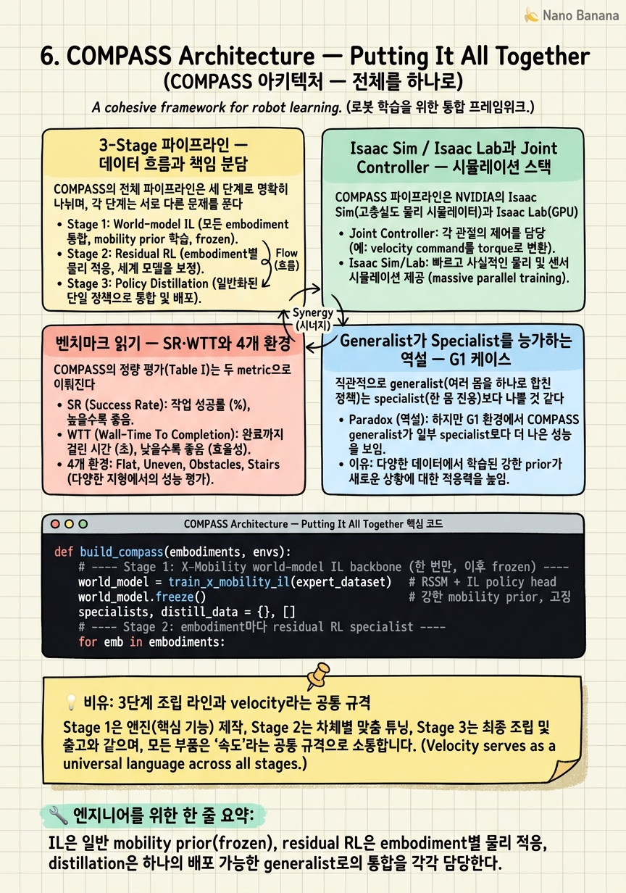

COMPASS Architecture — Putting It All Together

🎯 학습 목표
- COMPASS 3단계의 데이터 흐름과 각 단계의 입출력을 그릴 수 있다
- embodiment별 joint controller(locomotion policy)의 역할을 이해한다
- SR·WTT metric으로 specialist vs generalist를 비교 해석할 수 있다
- generalist가 specialist를 능가하기도 하는 현상(G1)을 설명할 수 있다
- COMPASS가 '알고리즘 논문'이 아니라 '시스템 논문'인 이유를 안다
지금까지 세 개의 조각을 따로 봤다. Chapter 2의 X-Mobility world model(frozen backbone), Chapter 4의 embodiment별 residual RL specialist, Chapter 5의 KL distillation generalist. 이 챕터는 이 셋이 어떻게 하나의 파이프라인으로 맞물리는지 — 데이터가 어디서 어디로 흐르고, 각 단계의 입출력이 무엇이며, 무엇이 고정되고 무엇이 학습되는지 — 를 전체 지도로 조립한다.
COMPASS(NVIDIA, 2025.02)의 핵심 주장은 세 단계가 순차적으로 책임을 분담한다는 것이다. IL은 mobility의 일반 prior를, residual RL은 embodiment별 물리 적응을, distillation은 이 모두를 하나의 배포 가능한 정책으로 통합한다. 그리고 이 전체가 Isaac Sim(시뮬레이션)과 Isaac Lab(RL 학습) 생태계 위에서 돌아가며, humanoid·quadruped는 별도의 joint-level locomotion controller와 결합된다.
마지막으로 이 챕터는 COMPASS의 벤치마크(Table I)를 정확히 읽는 법을 훈련한다. SR·WTT라는 두 metric으로 4개 embodiment × 4개 환경을 어떻게 비교하는지, 왜 specialist가 X-Mobility zero-shot 대비 SR을 5~40배 끌어올리는지, 그리고 놀랍게도 왜 generalist가 때때로 specialist를 능가하는지(G1)를 해석한다. 이 모든 것을 통해 우리는 COMPASS가 새 알고리즘을 발명한 논문이 아니라, 검증된 부품을 시스템으로 통합한 '시스템 논문'이라는 결론에 도달한다.
핵심 내용
3-Stage 파이프라인 — 데이터 흐름과 책임 분담
COMPASS의 전체 파이프라인은 세 단계로 명확히 나뉘며, 각 단계는 서로 다른 문제를 푼다.
Stage 1 — Imitation Learning (X-Mobility, frozen). classical mobility stack을 teacher로 하여 X-Mobility world model + policy head를 IL로 학습한다. 산출물은 환경 dynamics를 압축하는 latent state와, 그로부터 base action을 뽑는 IL policy다. 이 backbone은 이후 단계에서 고정(frozen)된다 — 강한 mobility prior를 제공하되 embodiment 적응은 하지 않는 역할이다. 입력: sensor observation(image 등) + goal. 출력: policy state \(p\)와 base action \(a_{base}\).
Stage 2 — Residual RL specialists. embodiment마다 하나씩, IL의 base action 위에 residual \(\Delta\)를 얹는 정책을 PPO로 학습한다. 실행 action은 \(a = a_{base} + \Delta\)이며, residual만 RL로 탐색하므로 학습이 IL prior 근처에서 시작된다. 이 점이 결정적인데, COMPASS는 IL base action 없이 RL-from-scratch로 학습하면 1000 episode에도 수렴하지 못한다는 것을 확인했다. residual 구조가 탐색 공간을 극적으로 줄이는 것이다. 입력: policy state \(p\). 출력: embodiment별 Gaussian action 분포 \(\mathcal{N}(\mu^{(i)}(p), \sigma^2)\).
Stage 3 — Policy distillation (generalist). 각 specialist를 rollout하며 \((p, e^{(i)}, \mu^{(i)}, \sigma^2)\)를 기록하고(embodiment당 320 traj × 128 step ≈ 40k frame), 이를 target으로 embodiment embedding 조건부 generalist를 KL distillation으로 학습한다(Chapter 5). 입력: \((p, e)\). 출력: \(\mu_\theta(p, e)\) + global variance.
전체를 관통하는 설계 원리는 책임의 분리다. 일반 mobility 지식(IL) / embodiment 물리 적응(residual RL) / 통합·배포(distillation)가 각각 독립된 단계에 캡슐화되어, 한 단계의 실패가 다른 단계를 오염시키지 않는다. 이 모듈성이 새 embodiment 추가나 backbone 교체를 국소적 변경으로 만든다.
Isaac Sim / Isaac Lab과 Joint Controller — 시뮬레이션 스택
COMPASS 파이프라인은 NVIDIA의 Isaac Sim(고충실도 물리 시뮬레이터)과 Isaac Lab(GPU 병렬 RL 학습 프레임워크) 위에서 돈다. residual RL specialist는 Isaac Lab에서 수천 개의 환경을 병렬로 굴려 학습되며, distillation의 40k frame/embodiment 데이터도 이 시뮬레이션에서 수집된다. 학습 인프라는 4x H100이다.
여기서 반드시 이해해야 할 계층 분리가 있다. COMPASS가 학습하는 정책은 velocity command 수준의 mobility 정책이지, 관절 토크를 직접 내는 정책이 아니다. 그 아래에 embodiment별 joint controller가 velocity command를 실제 관절 제어로 변환한다.
humanoid(H1·G1)와 quadruped(Spot)의 경우, joint controller는 Isaac Lab에서 별도로 학습한 RL locomotion policy다. 이 policy가 mobility 정책이 내린 velocity command(예: '앞으로 0.8 m/s, 좌회전')를 받아 다리 관절을 조율해 실제로 걷거나 뛰게 만든다. 즉 COMPASS의 mobility 정책은 '어디로 얼마나 빨리 갈지'를 결정하고, locomotion policy는 '그 속도를 내려면 다리를 어떻게 움직일지'를 담당하는 2층 구조다.
Carter(wheeled)는 사정이 다르다. Isaac Lab의 wheel physics 제약 때문에 바퀴 로봇에는 별도 locomotion RL policy 대신, velocity로 root state를 직접 조정하는 custom controller를 쓴다. 이 비대칭성은 사소해 보이지만 중요한 시스템 디테일이다 — cross-embodiment 파이프라인이 실제로는 embodiment마다 다른 하위 제어 스택을 우아하게 흡수해야 함을 보여준다. mobility 정책이 velocity 추상화 층에서 동작하기에, 이질적인 하위 controller(learned locomotion vs custom wheel)를 하나의 상위 정책으로 통합할 수 있는 것이다.
이 velocity-command 추상화가 COMPASS의 cross-embodiment를 가능케 하는 숨은 접착제다. 서로 다른 morphology를 공통의 명령 인터페이스(velocity)로 만나게 하고, 그 아래 물리적 실현은 embodiment별 controller에 위임한다.
벤치마크 읽기 — SR·WTT와 4개 환경
COMPASS의 정량 평가(Table I)는 두 metric으로 이뤄진다.
SR(Success Rate) = 충돌이나 timeout 없이 goal에 도달한 trial의 비율. 높을수록 좋다. WTT(Weighted Travel Time) = 성공 조건에서의 총 이동시간을 SR로 나눈 값. 즉 성공률로 정규화한 이동 효율이며, 낮을수록 좋다. WTT가 SR로 나뉘는 설계 덕에, 빠르지만 자주 실패하는 정책이 불이익을 받는다 — 속도와 신뢰성을 동시에 포착하는 metric이다.
| Metric | 정의 | 좋은 방향 |
|---|---|---|
| SR | 충돌·timeout 없이 goal 도달한 trial 비율 | 높을수록 |
| WTT | 성공 총 이동시간 / SR | 낮을수록 |
평가 환경은 4개다. warehouse single rack(24×38m), warehouse multi rack(24×38m), office(10×10m), combined(30×38m). 각 환경마다 640 trial, timeout 25.6초로 측정한다. warehouse는 넓고 장애물(rack)이 규칙적인 대공간, office는 좁고 조밀한 소공간, combined는 둘을 합친 long-horizon 시나리오로, 서로 다른 mobility 특성을 시험한다.
핵심 결과를 embodiment별로 정리하면 다음과 같다. 여기서 specialist/generalist는 X-Mobility zero-shot 대비 극적으로 개선된다.
| Embodiment | Type | X-Mobility SR (zero-shot) | Specialist/Generalist SR |
|---|---|---|---|
| Carter | wheeled | ~42-50% | ~85-92% |
| H1 | humanoid | ~9-26% | ~66-94% |
| Spot | quadruped | ~5-12% | ~75-93% |
| G1 | humanoid | ~2-10% | ~77-96% |
이 표에서 반드시 읽어야 할 두 가지. 첫째, X-Mobility(IL only)는 자신이 학습된 Carter에서는 준수하지만(~42-50%) 다른 embodiment로 zero-shot 전이하면 한 자릿수까지 무너진다. 이것이 Chapter 3~4에서 말한 embodiment-specific 적응의 필요성을 정면으로 입증한다 — mobility prior만으로는 morphology gap을 못 넘는다. 둘째, 그 격차를 residual RL + distillation이 메워 종합적으로 SR 5x~40x 개선, WTT 약 3x 개선을 달성한다. RL-from-scratch가 수렴조차 못한다는 사실과 함께 보면, IL prior와 residual 구조의 결합이 이 숫자의 진짜 엔진임이 드러난다.
Generalist가 Specialist를 능가하는 역설 — G1 케이스
직관적으로 generalist(여러 몸을 하나로 합친 정책)는 specialist(한 몸 전용)보다 나쁠 것 같다. 하나로 뭉치면서 성능을 조금 잃는 게 distillation의 자연스러운 대가처럼 보이기 때문이다. 그러나 COMPASS 벤치마크는 generalist가 specialist에 필적하거나 때때로 능가한다 — 특히 G1에서 — 는 반직관적 결과를 보인다.
원인은 distillation 단계에서 시나리오와 embodiment 다양성이 증가한다는 데 있다. specialist는 자기 embodiment의 데이터만 보지만, generalist는 모든 embodiment의 rollout을 함께 학습한다. 서로 다른 몸이 서로 다른 환경에서 겪은 경험이 공유 표현을 통해 서로를 보강하는 것이다 — 이것이 Open-X/RT-X에서 관찰된 positive transfer의 축소판이다. 데이터가 적거나 학습이 불안정했던 embodiment(G1 같은)일수록 이 교차 보강의 이득이 커, generalist가 자기 specialist를 앞지른다.
이는 Chapter 5에서 심은 averaging problem과 미묘한 긴장 관계에 있다. 조건화가 부실하면 averaging(성능 저하)이 일어나지만, 조건화가 충분히 강하면(one-hot) 같은 다양성이 오히려 positive transfer(성능 향상)로 뒤집힌다. 즉 embodiment 조건이 얼마나 잘 분리되어 있는가에 따라, 다양성은 독이 되기도 약이 되기도 한다. COMPASS의 one-hot + KL 설계가 이 저울을 positive transfer 쪽으로 기울인 셈이다.
정성적 case study가 이 morphology 반영을 생생히 보여준다. multi-rack warehouse의 long-horizon 시나리오에서, G1은 몸을 살짝 기울여 선반 밑을 통과하는 반면 H1은 clearance가 부족해 선반을 우회한다. 하나의 generalist 정책이 embodiment embedding에 따라 각 몸의 물리적 제약(키·폭)을 반영해 서로 다른 경로를 선택하는 것이다. 이것이 generalist가 단순 평균이 아니라 진짜로 embodiment를 인지한 정책임을 보여주는 결정적 증거다 — averaging을 이겨낸 조건화의 승리다.
'알고리즘 논문'이 아니라 '시스템 논문' — 배포와 한계
COMPASS를 정확히 자리매김하려면 그것이 새 알고리즘을 발명하지 않았다는 점을 인정해야 한다. world-model IL(X-Mobility), residual RL, policy distillation은 모두 이미 검증된 기법이다. COMPASS의 기여는 이 부품들을 하나의 작동하는 cross-embodiment mobility 시스템으로 통합하고, 그 통합이 실제로 작동함을 4개 embodiment × 4개 환경에서 정량적으로 입증한 것이다. 이것이 COMPASS가 '알고리즘 논문'이 아니라 '시스템 논문'인 이유다 — 기여의 단위가 새 수식이 아니라 검증된 파이프라인이다.
시스템 논문의 진가는 배포에서 드러난다. COMPASS는 학습된 X-Mobility backbone은 그대로 유지하고 IL policy만 distilled generalist로 교체하는 방식으로 배포된다. 실제 하드웨어 성능은 다음과 같다.
| 항목 | 값 |
|---|---|
| Runtime | TensorRT on AGX Jetson Orin |
| P50 latency | 29.3 ms |
| P95 latency | 29.4 ms |
| Model size | 422 MB |
P50과 P95가 거의 같다(29.3 vs 29.4ms)는 점에 주목하라 — latency 분산이 극히 작아 실시간 제어에 적합하다는 뜻이다. 엣지 디바이스(Jetson Orin)에서 30ms 이내로 도는 것은 이 정책이 실험실 데모가 아니라 실배포를 겨냥했음을 보여준다.
한계도 논문이 스스로 명시한다. 첫째, embodiment 표현이 one-hot이라 unseen embodiment로의 zero-shot이 불가하며, 이를 위해 learned embedding으로의 전환이 필요하다(Chapter 5·7). 둘째, COMPASS는 point-goal navigation을 풀 뿐, 전역 경로 계획을 담당하는 graph route planner 같은 hierarchical mobility stack과 결합되어야 완전한 자율 주행이 된다. 즉 COMPASS는 mobility stack의 중간 층(local policy)을 cross-embodiment로 만든 것이지, 전체 스택을 대체한 것이 아니다.
마지막으로 COMPASS가 Isaac Sim/Lab 생태계에 탑재되고 GitHub NVlabs/COMPASS로 공개되었다는 점은 시스템 논문으로서의 정체성을 완성한다. 재현 가능하고, 확장 가능하며, 실제 로봇에 배포 가능한 파이프라인 — 이것이 이 강의 전반부(Ch1~6)가 도달한 종착점이자, 후반부(generative policy·sim-to-real·foundation model)로 나아가는 출발점이다.
💡 비유로 이해하기
COMPASS 파이프라인은 자동차 공장의 조립 라인과 닮았다. Stage 1(IL)은 모든 차종이 공유하는 '섀시(chassis)'를 찍어내는 공정이다 — 한 번 잘 만들어 놓으면 고정(frozen)하고 재사용한다. Stage 2(residual RL)는 그 섀시 위에 세단·SUV·트럭 각각의 특성을 얹는 차종별 커스터마이징 라인이다. Stage 3(distillation)은 이 모든 차종의 조립 노하우를 한 명의 마스터 기술자에게 전수해, 명찰(embodiment id)만 보고 어떤 차종이든 조립할 수 있게 만드는 통합 교육이다.
이 조립 라인이 돌아가는 비결은 'velocity command라는 공통 규격'이다. 상위 mobility 정책은 '시속 얼마로 어느 방향' 같은 표준 명령만 내리고, 그 명령을 실제 바퀴 회전이나 다리 관절로 바꾸는 일은 차종별 하위 부품(Carter의 custom wheel controller, H1·G1·Spot의 learned locomotion policy)에 맡긴다. 볼트 규격이 표준화되어 있으면 같은 조립 지침으로 다른 부품을 조립할 수 있는 것처럼, velocity라는 표준 인터페이스가 이질적인 몸들을 하나의 정책 아래 모은다.
그리고 이 공장이 진짜 공장인 이유 — 데모가 아니라 — 는 완성차가 실제 도로(Jetson Orin, 30ms)에서 달린다는 데 있다. 새 부품(알고리즘)을 발명한 게 아니라, 이미 있는 검증된 부품들을 하나의 작동하는 생산 라인으로 엮어낸 것. 그래서 COMPASS는 '발명 논문'이 아니라 '생산 라인 논문(시스템 논문)'이다.
💻 코드 예시
COMPASS 3단계를 하나의 오케스트레이션으로 옮긴 개념적 pseudo-pipeline이다. 무엇이 frozen이고 무엇이 embodiment마다 반복되며, distillation 데이터가 어디서 수집되는지 — 그리고 배포 시 backbone은 유지하고 policy만 교체하는 구조를 드러낸다.
def build_compass(embodiments, envs):
# ---- Stage 1: X-Mobility world-model IL backbone (한 번만, 이후 frozen) ----
world_model = train_x_mobility_il(expert_dataset) # RSSM + IL policy head
world_model.freeze() # 강한 mobility prior, 고정
specialists, distill_data = {}, []
# ---- Stage 2: embodiment마다 residual RL specialist ----
for emb in embodiments:
residual = ResidualPolicy(act_dim) # PPO로 학습되는 delta
joint_ctrl = load_joint_controller(emb)
# humanoid/quadruped: Isaac Lab RL locomotion policy
# wheeled(Carter): velocity로 root state 직접 조정하는 custom controller
for _ in range(N_ITERS):
rollouts = rollout_isaac_lab(
world_model, residual, joint_ctrl, envs[emb])
# 실행 action a = a_base(IL) + delta(residual) — from-scratch면 발산
ppo_update(residual, rollouts)
specialists[emb] = residual
# rollout하며 (p, e, mu, sigma) 기록 → distillation dataset
# embodiment당 320 traj x 128 step ~= 40k frame, 실패 케이스도 포함
distill_data += record_distribution(
world_model, residual, emb, n_traj=320, horizon=128)
# ---- Stage 3: 하나의 generalist로 KL distillation ----
generalist = DistilledPolicy(state_dim, len(embodiments), act_dim)
for _ in range(N_EPOCHS):
for batch in loader(distill_data):
distill_step(generalist, batch, opt) # min KL (Ch5)
# ---- 배포: backbone 유지 + IL policy만 generalist로 교체 ----
# TensorRT on Jetson Orin, P50 29.3ms / 422MB
return deploy(backbone=world_model, policy=generalist)world_model.freeze()가 파이프라인의 첫 설계 결정을 드러낸다. IL backbone은 딱 한 번 학습되고 이후 모든 단계에서 고정된다 — mobility prior는 공유 자산이지 embodiment마다 다시 배우는 것이 아니다.
Stage 2의 for-loop이 cross-embodiment의 실체다. embodiment마다 residual을 새로 만들되, joint_ctrl은 embodiment 타입에 따라 다르게 로드된다 — humanoid/quadruped는 Isaac Lab locomotion RL policy, Carter는 custom wheel controller. 이 비대칭을 mobility 정책은 velocity command 추상화로 흡수한다. 주석 a = a_base + delta가 residual RL의 핵심으로, IL base action이 없으면(from-scratch) 1000 episode에도 수렴하지 못한다.
record_distribution이 Stage 2와 3을 잇는 다리다. specialist를 rollout하며 (p, e, mu, sigma)를 320 traj × 128 step 규모로 기록하고, 성공만 거르지 않고 실패 케이스도 포함해 corner case를 학습에 노출한다.
Stage 3은 Chapter 5의 distill_step을 그대로 호출한다 — 3단계가 실제로 앞 챕터의 코드와 물리적으로 연결됨을 보여준다. 마지막 deploy가 시스템 논문의 정수다. backbone은 그대로, policy만 distilled generalist로 갈아끼워 TensorRT로 컴파일하면 Jetson Orin에서 P50 29.3ms, 422MB로 실시간 구동된다.
🏭 현업에서의 평가
✅ 시니어가 보는 것
- 3단계 각각의 입출력·무엇이 frozen/trained인지를 데이터 흐름으로 정확히 그리는 능력
- SR·WTT 같은 정규화된 metric을 정의하고, WTT가 SR로 나뉘는 설계 의도를 설명하는 통찰
- velocity-command 추상화가 이질적 하위 controller(learned locomotion vs custom wheel)를 어떻게 통합하는지 이해하는 시스템 관점
- generalist가 specialist를 능가하는 positive transfer를 데이터 다양성·조건화 강도와 연결해 설명하는 사고
- '알고리즘 novelty'와 '시스템 통합 기여'를 구분하고 후자의 가치를 인정하는 성숙도
⚠️ 레드 플래그
- 3단계를 뭉뚱그려 '그냥 RL로 학습한다'고 말하고 IL prior·frozen backbone의 역할을 놓침
- SR만 보고 WTT(효율)를 무시하거나, WTT가 SR로 정규화된 이유를 모름
- generalist는 무조건 specialist보다 나쁘다고 단정(positive transfer 현상을 모름)
- joint controller 계층을 인지하지 못하고 mobility 정책이 관절 토크를 직접 낸다고 오해
- 시스템 논문이라는 이유로 기여를 폄하하거나, 반대로 새 알고리즘이라 잘못 소개
🎤 예상 인터뷰 질문
- COMPASS 3단계의 데이터 흐름을 그리고, 각 단계에서 무엇이 고정되고 무엇이 학습되는지, 왜 그렇게 나눴는지 설명하라.
- X-Mobility zero-shot SR이 Carter에선 ~45%지만 G1에선 한 자릿수인 결과를 어떻게 해석하며, 이것이 residual RL의 필요성을 어떻게 뒷받침하는가?
- generalist가 specialist를 능가할 수 있는 조건은 무엇이며(G1 사례), 이 현상이 언제는 averaging(성능 저하)로 뒤집히는가?
✨ 핵심 요약
3단계는 책임을 분담한다
IL은 일반 mobility prior(frozen), residual RL은 embodiment별 물리 적응, distillation은 하나의 배포 가능한 generalist로의 통합을 각각 담당한다.
IL prior 없는 RL은 수렴하지 못한다
residual RL은 IL base action 위에 delta만 탐색하므로 안정적이지만, RL-from-scratch는 1000 episode에도 발산한다.
velocity-command가 cross-embodiment의 접착제
mobility 정책은 velocity만 명령하고, humanoid/quadruped는 Isaac Lab locomotion policy가, Carter는 custom wheel controller가 그것을 실제 제어로 변환한다.
SR·WTT로 신뢰성과 효율을 함께 본다
SR은 충돌·timeout 없는 goal 도달 비율, WTT는 성공 이동시간을 SR로 나눈 값 — 빠르지만 자주 실패하는 정책을 벌한다.
X-Mobility zero-shot은 embodiment 적응의 필요성을 입증한다
Carter에선 ~42-50%지만 다른 몸으로 zero-shot 시 한 자릿수로 붕괴 — specialist/generalist가 SR을 5~40x, WTT를 3x 개선한다.
Generalist가 specialist를 능가하기도 한다
distillation의 시나리오·embodiment 다양성이 positive transfer를 만들어, 데이터가 부족했던 G1 등에서 generalist가 자기 specialist를 앞선다.
조건화된 generalist는 morphology를 인지한다
multi-rack에서 G1은 기울여 선반 밑을 통과하고 H1은 clearance 부족으로 우회 — 하나의 정책이 embodiment 제약을 반영한 증거다.
COMPASS는 시스템 논문이다
새 알고리즘이 아니라 검증된 부품(world-model IL + residual RL + distillation)을 Jetson Orin 30ms 배포까지 통합·검증한 파이프라인이다.